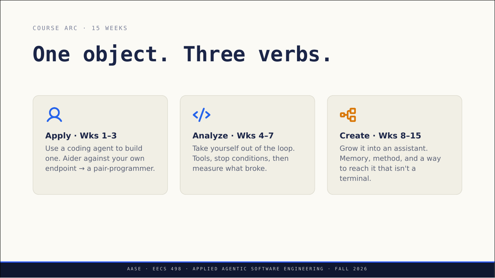
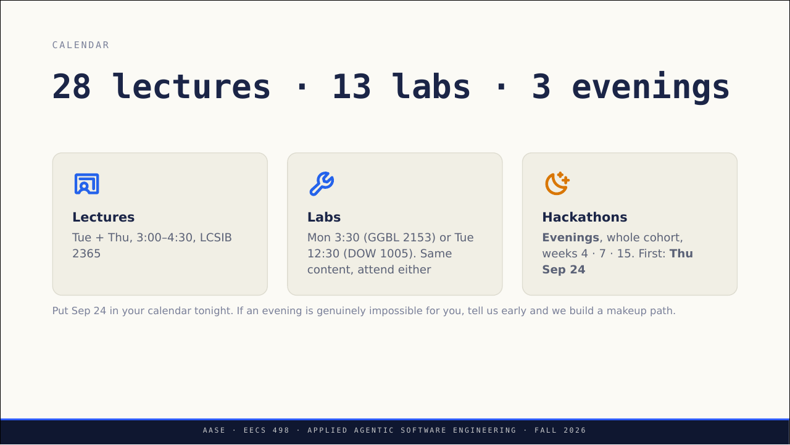
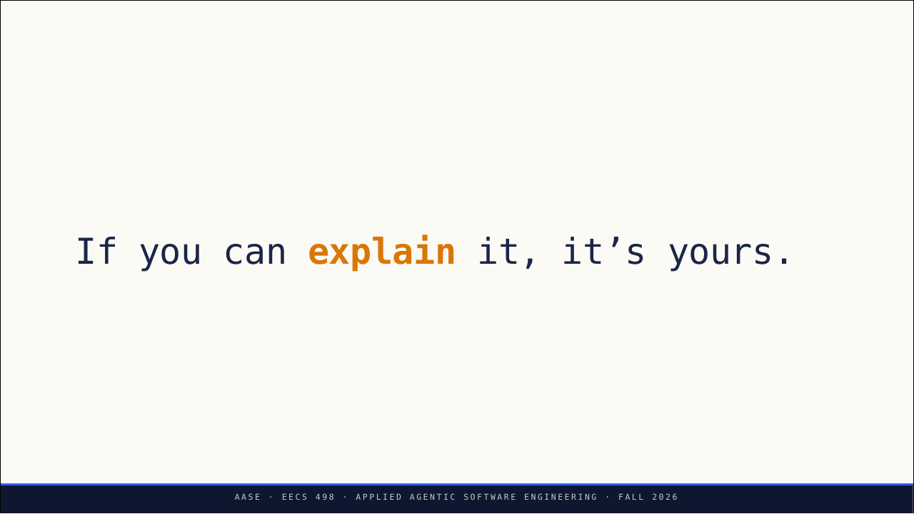
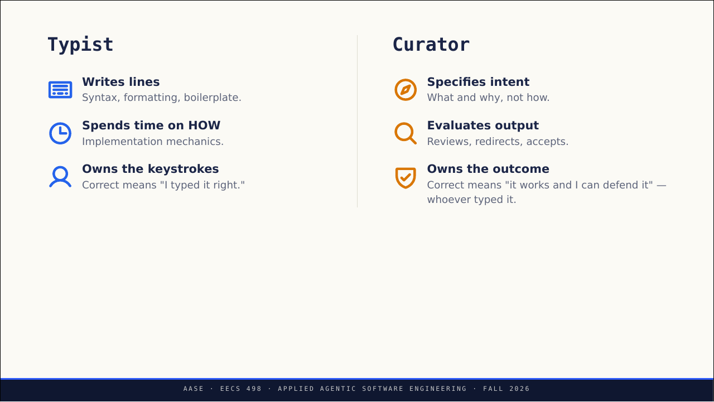
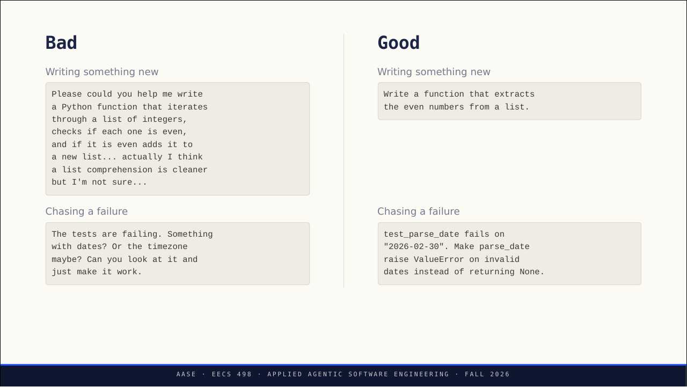
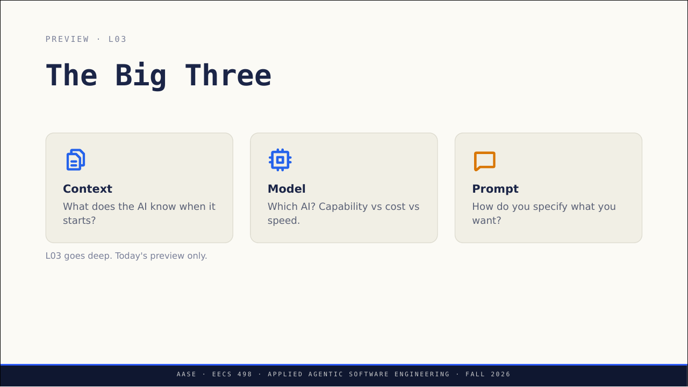
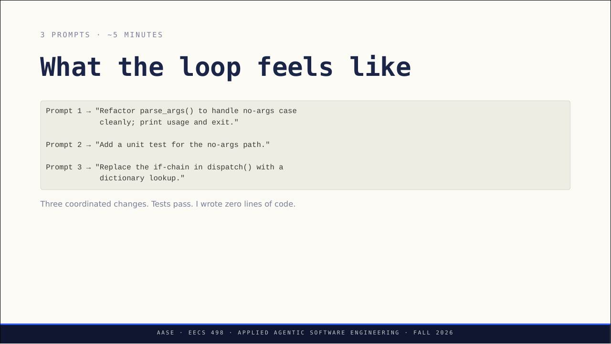
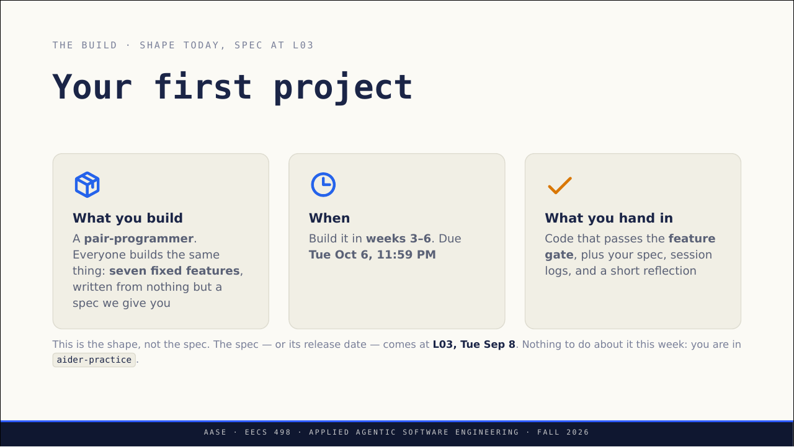

EECS 498-016 AASE · L01 · 2026-09-01 · 讲者 Marcus Darden（密歇根大学）
第 1 讲：一个对象、三个动词，以及从 Typist 变成 Curator
这是 2026 年 9 月 1 日的 Lecture 01（L01），开课第 1 天（Day 1）。讲者备注写明顺序：先定位课程，再讲清理念，然后讨论，最后才介绍工具。
约 25 分钟。材料：官方仓库 slides.md（含讲者备注）、同页 PDF，以及现场演示仓库的 README 和 notes.py。8 张原图是 slides.pdf 的同页渲染。
先原则，最后才是工具
开场两页只有一句话：先是「Smile.」，再补上「You belong here.」。讲者备注说，第一页要真的等学生笑出来，依据是具身认知：姿态和表情会影响认知表现。第二页让学生转向邻座说这句话，然后马上往下讲。
路线图写着 80 分钟，共 7 段：一个对象三个动词（One object, three verbs）、课程怎么运行（How this course runs）、AI 编程的发展（到 2026 年走到了哪里）、Code Curator 理念、两个讨论题（Discussion）、工具 Aider 以及用起来是什么感觉、本周任务（aider-practice、setup gate、你要做的项目）。
讲者备注特意强调：工具放在最后。先讲原则，再拿到工具。
课件页： 出处：Course intro + the AI coding landscape 出处：Lecture 01 · Sep 1, 2026 出处：Where we're headed today
15 周只做一件东西：编码智能体
课程分 Apply、Analyze、Create 三段，共 15 周。三段对着同一个对象：一个编码智能体。
- Apply（第 1–3 周）用它：用 Aider 连你自己部署的模型端点，做出一个结对程序员（pair programmer）。
- Analyze（第 4–7 周）分析它：把你自己移出循环，给它加上工具和停止条件，然后测量哪里坏了。
- Create（第 8–15 周）造它：把它长成助手，加上记忆、方法，以及一个不是终端的使用渠道。

讲者备注要求把这句话说出口：从第 1 周到第 15 周，全是同一个仓库。
补充（课程网站 syllabus，10 月 22 日修订版）：Apply 的项目一直做到第 6 周；从 Lab03 起，Analyze 改在你自己的 Aider 私有副本上做；Create 改为在现有 harness 上构建，不从零写。本页其余内容以 9 月 1 日的课件为准。
课件页： 出处：Course Shape 出处：Apply · Analyze · Create 出处：One object. Three verbs.
五个地方，四个人，一个邮箱
这部分讲者备注要求讲得快：细节在 syllabus 里，这里只给地图。但讲到学术诚信和晚上的 Hackathon 时要放慢。
Course site eecs498-aase.github.io | Syllabus + schedule. Wins on dates and policy |
Ed edstem.org | Questions and announcements. This is where we reach you |
GitHub aase-student | Everything you receive. Your own repo per handout. Accept the invite in your email |
| Canvas | Grades |
| Podcast (optional) | A Brief before each lecture, a Deep Dive after |
原表两列都没有表头。
读法：日期和政策以课程网站为准；提问和通知都在 Ed；每份作业在 GitHub 的 aase-student 里有一个你自己的仓库，要先在邮件里接受邀请；成绩在 Canvas；播客可选，每讲前有一期 Brief，讲后有一期 Deep Dive。
课程会录像（CAEN + Zoom）。播客由 AI 根据课程材料和去标识化的转录生成，不点任何人的名字；想删掉某段内容，发邮件给课程组就会删。讲者备注：录像这件事要直接说，不要藏起来；Ed 是学生必须常看的地方，播客的通知已经发在那里。
课程组 4 人：讲者 Marcus Darden，两位 GSI（研究生助教）Rafe Symonds、Zilin Wang，一位 IA（本科助教）Rushil Kagithala。eecs-aase-staff@umich.edu 一个地址能找到全部 4 人。
个人的事（延期、学习支持安排、硬件问题）发邮件；全班都该听到的问题发 Ed。办公时间从本周开始，时间和教室会发在 Ed 上。
课件页： 出处：How This Course Runs 出处：Sites · staff · grades · calendar 出处：Where things live 出处：Who you're dealing with
没有考试，近一半分数在 Create
| Share of your grade | |
|---|---|
| Administrative — lecture + lab attendance, bonuses | 10% |
| Apply — weeks 1–3, build to end of 4 | 18% |
| Analyze — weeks 4–7 | 22.5% |
| Create — weeks 8–15 | 49.5% |
单位：占总成绩的百分比。
读法：出勤和加分占 10%；Apply 占 18%（第 1–3 周，项目做到第 4 周末）；Analyze（第 4–7 周）占 22.5%；Create（第 8–15 周）占 49.5%。课件标题写明没有考试。
讲者备注：用「关卡」的说法能消除「我过没过」的焦虑，也让学生自然想到早点运行检查。
课件页： 出处：How you're graded
28 讲、13 次实验、3 个晚上
- 全学期 28 讲、13 次实验、3 个晚上。讲课：周二、周四 3:00–4:30，教室 LCSIB 2365。
- 实验：周一 3:30（GGBL 2153）或周二 12:30（DOW 1005），内容相同，任选其一。
- Hackathon：晚上，全班一起，第 4、7、15 周（weeks 4 · 7 · 15）。第一次是 9 月 24 日周四（Thu Sep 24）。

课件要求当晚就把 Sep 24 写进日历。某个晚上实在来不了，要早点说，课程组会安排补做的路径。讲者备注解释了原因：教室里可能有人有工作或孩子，需要提前 3 周知道，而不是提前 3 天。
出勤 70% 拿满分，迟交 3 天后记零
- 出勤占总成绩 10%，其中讲课 60%、实验 40%；用 Poll Everywhere 签到（App 或浏览器都行）。出勤达到 70% 就拿满分。
- 迟交每天扣 10%，扣 3 天，之后记零分；没有宽限日（late days）。
- 独立完成：想法可以自由讨论，代码和提示词绝不能分享。
- 费用：零。没有教材，不用花钱买大模型调用；笔记本跑不动模型时由 CAEN 提供，细节在 Ed。讲者备注说，这是让「本地模型」政策公平的承诺，所以谁都不需要买订阅。
课件页： 出处：The short version
你能解释它，它才是你的
If you can explain it, it’s yours.
Marcus Darden，L01 slides 第 13 页

讲者备注要求讲到这页时放慢。这门课要求使用 AI，不只是容忍。评分看的是理解：交上去的每一行你都要能解释，并记录用了哪些工具、模型和提示词。解释不了，代码就不是你的，这属于荣誉准则（Honor Code）问题。
补充（syllabus「Description」）：课程网站写的是同一个意思：「Understanding is what gets graded here, not generation.」
课件页： 出处：The short version
四波浪潮，现在是第 4 波：编排
- 第 1 波 自动补全（2021–22）：课件从这里讲到我们所在的 2026 年秋季（Fall 2026）。GitHub Copilot。一个文件，你来开车。
- 第 2 波 对话（2022–23）：先是 ChatGPT，然后是 IDE 里的对话。提问、粘贴、修改。
- 第 3 波 智能体工具（2023–25）：先是 Cursor 和 Aider，然后是 Claude Code 和 Codex。多文件编辑，工具会执行命令。
- 第 4 波 编排（2025–now）：多个智能体，长时间运行，有人监督。课程的 Create 阶段会走到这里。
讲者备注：自动补全其实比第 1 波更早，比如 Kite、TabNine；但从 Copilot 开始它才真正被依赖，所以从它算起。大多数学生是在第 3 波入门的，课程要在 12 月走到第 4 波。
下一页只有一句：炒作很陡，现实更有意思。讲者备注说这是诚实的时刻：AI 没有取代程序员，而是出现了一类新的工作流；学会和 AI 一起工作的开发者，生产力明显提高。
写完代码，你是学到了，还是拿到了答案？
和邻座聊 5 分钟。讨论题：回想上一次借助 AI 写代码，或者不用 AI 写代码。什么让你觉得高效？什么让你沮丧？写完以后，你觉得自己是学到了东西，还是只拿到了答案？
课件说，这个问题贯穿整门课。讲者在下一页的转场备注里请学生带着刚才的讨论进入 Curator 理念。
Typist 对按键负责，Curator 对结果负责
Typist（写代码行的人）和 Curator（把关代码的人）是这门课的思维模型。课件把两种角色并排放：
| Typist（写代码行的人） | Curator（把关代码的人） |
|---|---|
| 写代码行：语法、格式、样板代码。 | 说明意图：写做什么、为什么，不写怎么做。 |
| 时间花在 HOW：实现的具体操作。 | 评估输出：审查、改方向、接受。 |
| 拥有按键：「正确」= 我打对了。 | 拥有结果：「正确」= 能运行，而且我能为它辩护，不管是谁打的。 |

讲者备注：这是理念上的转变。同一个工程师，只是时间分配不同。
接着一页是 KISS：提示词要聚焦，忍住过度解释的冲动。讲者备注特别说明，这里的 KISS 不是网络协议，在本课的意思是「清晰胜过啰嗦」。
好提示词写出测试名、输入和期望行为
KISS 之后，讲者切到浏览器做了一次 PollEv 投票。备注说要把问题和四个选项都念出来，给大约 60 秒（~60s），展示投票结果，再回到课件；课件没有给出题目内容。
Bad 一栏有两个例子。写新东西时，提示词绕了一大圈：先客气地请求，再把实现步骤一条条说出来，最后自己又犹豫要不要用列表推导式。
追一个失败时，Bad 的写法是猜：是日期的问题？还是时区？然后让模型「just make it work」。
Good 一栏写新东西只用一句：提取列表里的偶数。
Good 一栏追失败时，先写明 test_parse_date 在输入 2026-02-30 上失败，再要求 parse_date 遇到无效日期时抛 ValueError，而不是返回 None。这一句写出了 4 样东西：哪个测试、哪个输入（2026-02-30）、期望行为、现在的错误行为。

讲者备注：「B 几乎总是得到更好的结果，模型会推断剩下的部分。」原文只写了 B，没说指哪一项（可能是 PollEv 四个选项里的 B），这里不替它下结论。多加附带说明只会叠加歧义，不会消除歧义。
Big Three：上下文、模型、提示词
- （L03 预告）Context 上下文：AI 开始工作时知道什么？
- Model 模型：用哪个 AI？在能力、成本、速度之间取舍。
- Prompt 提示词：你怎样说明自己要什么？

补充（syllabus 学习目标 /01）：学期结束时，学生要能用 Big Three 推理 AI 编码工具为什么失败。
课件页： 出处：The Big Three
基础仍然重要，因为你要评估输出
| 问题 | 讲者备注里的答案要点 |
|---|---|
| Q1：既然 AI 能写代码，为什么还要学 EECS 281？ | 计算机基础仍然重要：你要评估输出。 |
| Q2：什么时候你不想用 AI 写代码？（When would you not want to use AI to write code?） | 学习的时候、安全关键的代码、深度维护。 |
每题先各想一分钟，再全班讨论。
讲者备注说，这两个问题用来给刚提出的原则「施压」。
暂时选 Aider（for now），是因为决定都摆在明面上
- Big Three 是显式的。没有图形界面替你藏起上下文、模型或提示词的决定。
- 讲 OpenAI 兼容 API。所以它能连你自己部署的模型。
- 小到能重建（Small enough to rebuild）。你会从第 3 周开始重建它。
讲者备注要求重点讲第 2 条：模型只是一行配置，不是依赖，这就是这门课不花钱的原因。Claude Code 会在 L05 以演示的形式出现，不需要账号，这一点要直说。
课件页： 出处：The Tool 出处：Why Aider — for now 出处：Why Aider in Apply?
你说结果，模型改代码，你判断
讲者备注说这几分钟不是教程，只让学生感受一下 AI 结对编程是什么样子。环境在 Setup Lab 已经装好，命令在 aider-practice 里学。课件写明：3 个提示词，大约 5 分钟。
- 提示词 1：重构
parse_args()，干净地处理没有参数的情况：打印用法后退出。 - 提示词 2：给无参数路径加一个单元测试。
- 提示词 3：把
dispatch()里的 if 链换成字典查找。

I described outcomes. The model produced them.
L01 slides 第 31 页
这一页最后一句是 I judged（judged 用斜体强调）：结果由人来判断。
讲者备注：这就是协作的形状。要记住的不是命令，而是这个形状。
演示 README 里的三个提示词和课件基本相同，只有提示词 1 的措辞略有不同（README 用破折号连接「处理无参数情况」和「打印用法、干净退出」）。README 要求接近原话地说出来，因为这三句就是演示本身（三句分别以 Refactor parse_args()、Add a unit test、Replace the if-chain 开头）。
课件页： 出处：AI Pair-Coding 出处：A first look 出处：What the loop feels like
四个测试全绿，代码仍有两处缺陷
L01 现场演示用的代码是 notes.py，约六十行的笔记命令行，故意留了两处缺陷；演示用三个提示词修好两处，没人敲一行代码。README 说给你代码是为了让你自己跑：看别人驾驶 Aider 和自己驾驶是两种技能，而只有其中一种会考（only one of them is on the exam）。课件评分页写的是「no exams」，原文没交代两句怎么对上。
"""notes - a very small note CLI.
Deliberately imperfect in two places, both of which the L01 demo fixes live:
parse_args() does not survive being called with no arguments, and dispatch()
is an if-chain. Keep this file short: it goes on a projector.
"""
import sys
from pathlib import Path
NOTES = Path("notes.txt")
def parse_args(argv):
"""Split argv into a command and its arguments."""
return argv[0], argv[1:]
def read_notes():
if not NOTES.exists():
return []
return [ln for ln in NOTES.read_text().splitlines() if ln.strip()]
def cmd_add(args):
if not args:
print("add: nothing to add")
return 1
with NOTES.open("a") as f:
f.write(" ".join(args) + "\n")
return 0
def cmd_list(args):
notes = read_notes()
if not notes:
print("no notes yet")
return 0
for i, note in enumerate(notes, 1):
print(f"{i}. {note}")
return 0
def cmd_count(args):
print(len(read_notes()))
return 0
def dispatch(command, args):
"""Run one command by name."""
if command == "add":
return cmd_add(args)
elif command == "list":
return cmd_list(args)
elif command == "count":
return cmd_count(args)
else:
print(f"unknown command: {command}")
return 1
def main(argv=None):
command, args = parse_args(argv if argv is not None else sys.argv[1:])
return dispatch(command, args)
if __name__ == "__main__":
sys.exit(main())
文件头就写明了两处缺陷
README 要你开始前先打开 notes.py，它故意写得很短。docstring 直说：parse_args() 撑不过无参数调用，dispatch() 是一串 if；还要求文件保持短小，因为要上投影。
缺陷 1：没有参数就崩溃
第 15 行直接取 argv[0]。列表为空时这里抛 IndexError；不带参数运行这个文件就能看到它崩溃。
笔记存在 notes.txt
文件不存在时返回空列表；存在时按行读出，跳过空行。
三个命令：add、list、count
add 没给内容时打印提示并返回 1；list 给每条笔记编号；count 打印笔记条数。
缺陷 2：dispatch() 是 if 链
dispatch() 是一串 if（if-chain）。它能工作，只是 README 说「不是你会写的样子」。提示词 3 要把它换成字典查找。
main() 要把结果拆成两个值
第 62 行写的是 command, args = parse_args(...)。所以提示词 1 的修复如果让无参数分支返回别的形状，这里就拆不开，所有命令都会坏。
即使有这两处缺陷，4 个测试照样全部通过。README 说这是第一件值得注意的事：测试全绿不等于代码好。
notes.py 两处缺陷所在：第 13–15 行、第 48–58 行。演示 README： 出处：notes: the L01 demo 出处：The two flaws
每个提示词之后，先读 diff 再接受
在演示目录运行 ./reset。它在你的仓库根目录旁边（demo-scratch 目录下）建一个 L01 演示的可丢弃副本，配好 Aider，把副本做成 git 仓库（所以 /undo 能用），再跑一遍测试，最后打印副本的完整路径。想重来就再运行一次。
./reset不要在原目录里运行 Aider：那里的配置文件故意不带点（aider.conf.yml 而不是 .aider.conf.yml），Aider 会忽略它们，原目录保持干净。进副本后这样启动：
cd ../../demo-scratch/L01-notes-cli
aider notes.py test_notes.py三个提示词，每个之后都先读 diff 再接受，README 说这是整个练习的重点：模型生成，你判断。测试要在看得见的地方跑：
/run pytest -q预期：开始时 4 个测试，提示词 2 之后 5 个，提示词 3 之后仍全绿。
README 提醒别盯着命令，命令由 aider-practice 教，教得比五分钟演示好。要注意的是循环：你描述结果，模型提出修改，你读完再决定。五分钟三个协同修改、零行手写，这是协作的形状；判断那一步仍然是你的。
演示 README： 出处：Get a working copy 出处：The three prompts 出处：What to actually pay attention to
提示词 1 之后测试全绿，什么也说明不了
README 说，提示词 1 在 9B 模型上大约一半时候能成功；紧接着一句英文是「Ten runs, three fixes」，字面是「十次运行、三次修好」，但这和「大约一半」对不上，也可能另有所指，原文没解释；换 Aider 的编辑格式也几乎没改善。
它每次失败的样子都不一样，所以别背失败特征。排练中见过两种：
- 形状 1：旧函数留在下面。模型写了修好的
parse_args()，却把原来那个留在文件下方。Python 绑定的是后一个定义，什么也没变。 - 形状 2：返回值拆不开。无参数分支返回了
main()拆不开的东西，所有命令都坏了。
这两种在测试眼里完全不同。形状 1 在二十次运行里都让 4 个测试保持全绿，因为没有测试用空列表调用 parse_args；形状 2 会让测试立刻变红。所以提示词 1 之后要运行 python3 notes.py（提示词针对的就是它），并在接受前读 diff。README 说，注意到这一点才是真正的技能，也是给你代码而不是给视频的原因。
换 4B 模型再跑一次也值得：
./reset --model 4b加上这个参数就把模型固定为 4B。同样三个提示词，模型更小，要更费力：更多轮反馈，至少会遇到一个该拒绝的 diff。README 说这不是缺陷，而是更快学到这一课。要问的从来不是「这个模型差不差」，而是上下文、模型还是提示词出了问题，也就是 L03 的内容。
配置：aider.conf.yml 把主模型和弱模型都固定为 9B，这样 Ollama 只常驻一个模型，不会在每次自动提交时换来换去。它还设了 think: false：qwen3.5 是推理模型，放任不管会把预算花在思考上。在这个项目上实测，1200 个 token 的推理、0 个字符的输出，耗时 23 秒，关掉思考是 9 秒。如果每个提示词要 25 秒或更久，说明参数没传到 Ollama，就在每个提示词末尾加 /no_think。
aider.model.metadata.json 故意按前沿模型的价格给这些免费本地模型定价，这样 /tokens 能告诉你：如果付费，这次会话要花多少钱。
演示 README： 出处：Try it on the 4B 出处：Configuration 出处：The thing to watch for on prompt 1
每一课都是一个失败的测试
讲者备注：环境由你自己负责，这里讲清楚这一周怎么过。课后的 aider-practice 共十六课，每一课都是一个失败的测试：
- Part 1，第 1–10 课，本周：在
qwen3.5:4b上做taskr的命令行。 - Part 2，第 11–16 课，下周：在同一份数据上做网页前端。建议用
9b，但不强制。 - 你驾驶 Aider，直到测试通过。你永远不用猜自己是不是做完了。
- Setup gate 和全部十六课在 9 月 11 日周五截止（Fri Sep 11）。
- Lab01 在 9 月 14 日周一或 15 日周二，是「转折实验」。
Aider 在 Setup Lab 里已经跑起来了。之后卡住就去办公时间，任何一位老师或助教都行；时间和教室周五前发在 Ed。
第一个项目今天只给形状，规格在 L03 给。做什么：一个结对程序员。所有人做同一个东西：七个固定功能，只凭课程给的规格从零写。
什么时候：第 3–6 周做（weeks 3–6），10 月 6 日周二晚 11:59 截止。
交什么：通过 feature gate 的代码，加上你的规格、会话日志和一份简短反思。

最后一页：Aider 会消失，原则不会。讲者备注：持久的是框架，工具来来去去；Claude Code 和 Codex 已经是它的后继者，有人问就直说。
补充（syllabus，10 月 22 日修订版）：项目要求后来细化为七个功能加 YAML 配置，评分一半看规格与设计、一半看实现与测试。
课件页： 出处：This Week 出处：aider-practice · setup gate · the build 出处：Every lesson is a failing test 出处：Your first project
用 6 个场景检查你是不是 Curator
小测题目由学习搭子出，依据第 7、10、11、14、17、18 节（来源见各节）。